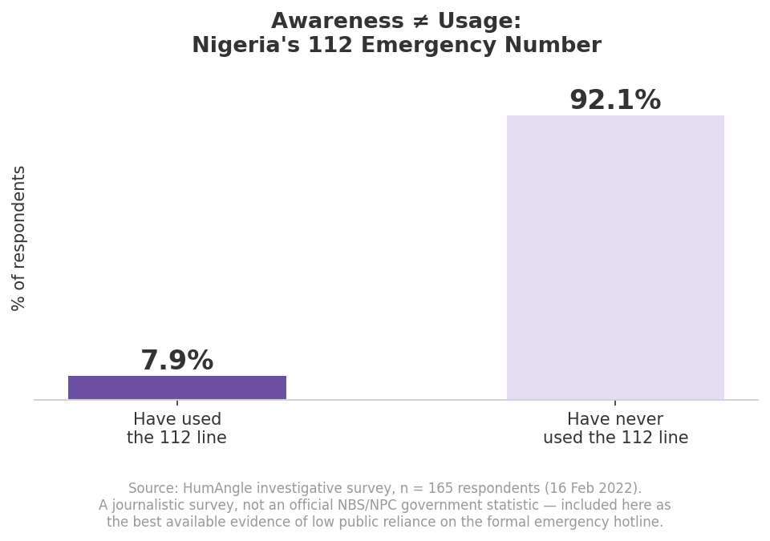
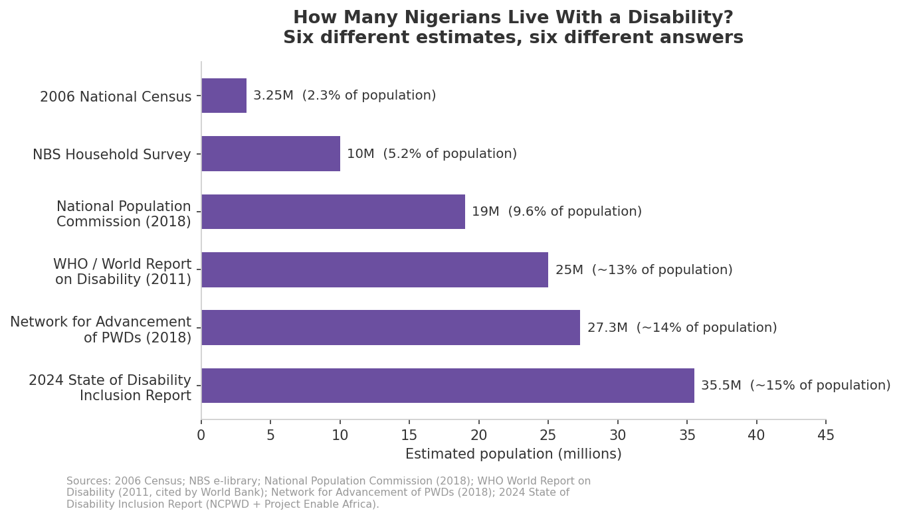
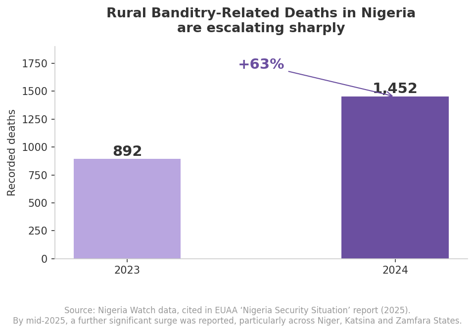
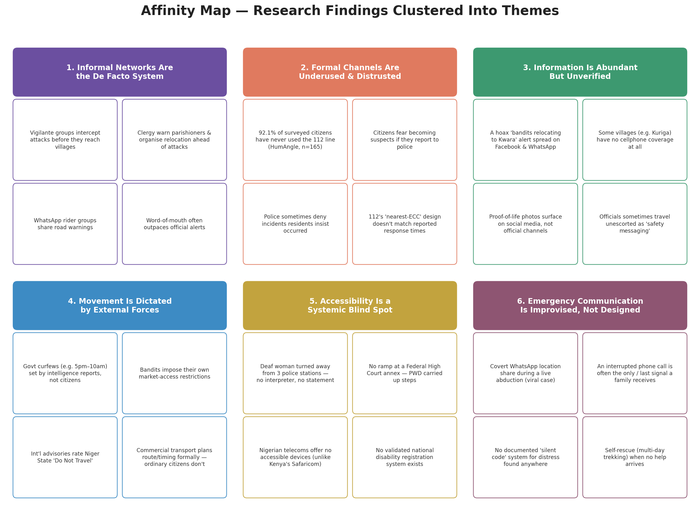
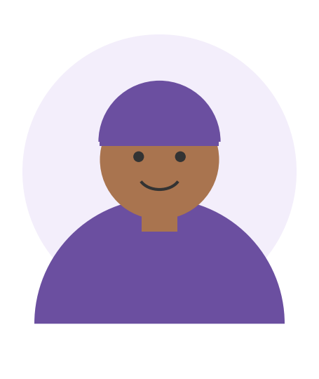
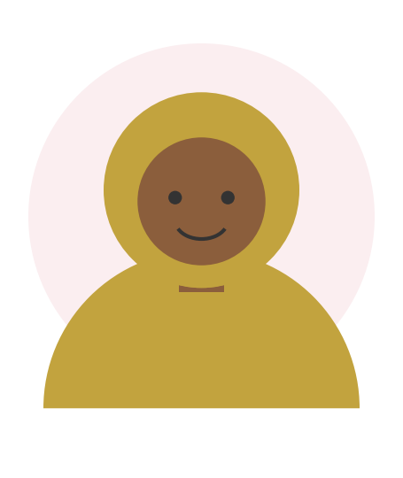
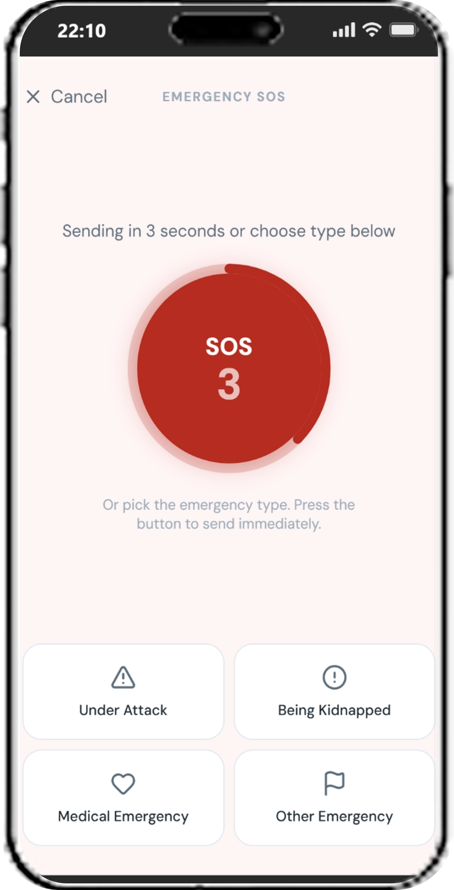
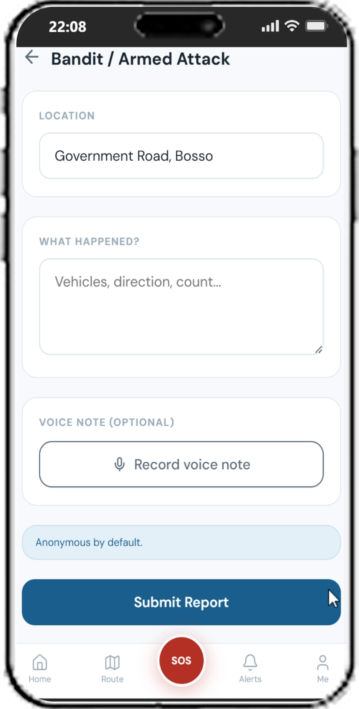
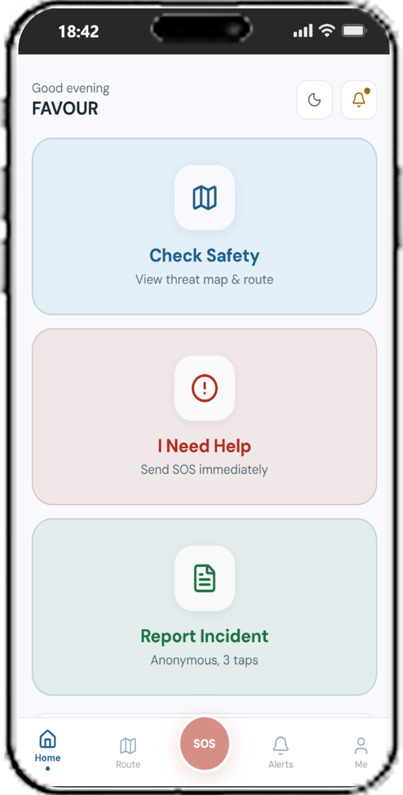

RAS Rapid Alert System
A mobile-first safety app for Nigerians living with kidnapping and banditry risk in states like Niger, Katsina, and Zamfara. Built around low-bandwidth alerts, anonymous reporting, and accessibility designed in from day one.
Prototype in testing, not yet public
Overview
In parts of Nigeria, kidnapping and armed attacks on roads and villages are a real, ongoing risk, not a rare event. Millions of people plan their daily lives around it: which road is safe to travel today, what to do if an attack starts nearby, how to get help without becoming a target themselves.
When someone hesitates in that moment, because a screen is confusing or a warning doesn't reach them, the cost isn't a bad review. It's a missed alert, a delayed response, or worse.
Now imagine you're one of those people. You might have an old Android phone with patchy internet, or no smartphone at all. There's no reliable app or number you fully trust to warn you in time, or to call for help without drawing unwanted attention. That gap, between the danger people face and the tools they have to respond to it, is what RAS was built to close.
This case study walks through the thinking behind it: 79 pieces of research, two personas, journey maps, a competitor teardown, and a prioritised feature set, including two assumptions I got wrong before the research corrected them.
Before designing anything, I needed to understand who I was designing for, and what I might be getting wrong about them.This section covers the research and the assumptions it corrected.
Where I Started vs. What the Research Found
Before any research, I carried two assumptions about the people RAS would serve. Click into each one below. I got both wrong, and the correction shaped the product more than the original assumption ever could.
"People in high-risk areas simply don't have anyone to call."
Reality: it's not that people had no number to call. A HumAngle survey found 92.1% had never even tried it. See more →See less
Nigeria's 112 emergency line already exists on paper. But in a HumAngle investigative survey of 165 respondents, 92.1% said they had never used it, even as a preventive habit, before anything had gone wrong.

The problem wasn't the absence of a number. It was that nobody fully trusted the number to answer in time. Even when people did call police, response was often slow, or never came. So instead of just giving people a hotline, RAS extends the power to raise and receive an alert to emergency contacts and community or vigilante structures, the people already closest and fastest, while still routing into the formal system in parallel.
"Disabled users could largely be served by the same alert and reporting flows as everyone else, with a little help from family to bridge the gaps."
Reality: Nigeria can't even agree on how many disabled citizens it has. Estimates swing from 3.25M to 35.5M. See more →See less
Nigeria doesn't even agree on how many disabled citizens it has. Estimates range from 3.25 million to 35.5 million, a sign that this population is undercounted at every level, not just underserved by any single system.

One documented case: a deaf woman visited three separate police stations to report violence and was turned away from all three. No interpreter, no statement taken. In Niger State, RAS's core geography, 71% of persons with disabilities can't access basic medical care under normal circumstances. Accessibility couldn't be layered on top of Musa's flows later. It had to be a first-class requirement from day one. That's why Hauwa, representing disabled users, carries equal research depth and an equal number of MUST-have features to Musa throughout this project.
Empathise & Discover: Research Snapshot
Before I drew a single persona, I ran secondary research across four sheets: General Citizens and Disabled Users, each split into preventive and active actions. Sources included news reporting, official travel advisories, NGO and policy briefs, and academic research.

One finding shaped everything about how I approached Hauwa: the Disabled Users sheets came back a fraction of the size of the General Citizens sheets, with some questions returning close to 100% research gaps. That's not because disabled Nigerians experience less insecurity. They live in the same villages and travel the same roads. It's that their experiences get filtered out of the public record at almost every step. I treated that silence as a finding, not an absence of one.
Affinity Map: Six Recurring Themes
Every finding from the four research sheets got clustered into six themes. These went on to inform every persona, journey map, and problem statement that follows. Worth a minute of your time.

1. Informal networks are the de facto system
Vigilante groups, clergy, and WhatsApp rider networks move faster and are trusted more than official channels, but are unverified and can be overwhelmed.
2. Formal channels are underused & distrusted
112 exists on paper but is barely used. Citizens fear becoming suspects, not just being ignored.
3. Information is abundant but unverified
WhatsApp/Facebook dominate, but hoaxes look just as credible as real alerts.
4. Movement is dictated by external forces
Curfews and bandit-imposed restrictions shape travel, usually without citizen input or notice.
5. Accessibility is a systemic blind spot
Every layer of the safety ecosystem (alerts, hotlines, police stations) was designed without disabled users in mind.
6. Emergency communication is improvised, not designed
No standard protocol exists. People covertly share location, shout warnings, or use interrupted calls.
So who does this actually affect, and where does the current system break down for them?This section introduces the two people RAS is designed for, and the exact moments where existing help fails them.
Define: User Personas
Meet the two people every decision in this case study was made for.

Persona 1: The General Citizen
Travels a bandit-affected road twice a week because market day is his livelihood. Owns a basic Android with unreliable data, relies on WhatsApp and word-of-mouth, has never used 112.
"I don't need soldiers to follow me to the market. I just need to know, before I leave my house, whether today is a day to travel, or a day to stay home."

Persona 2: The User With a Disability
Communicates through sign language and gesture, shares a basic "candle" phone with her household, and has never been part of a formal disability association. Represents users for whom even imperfect existing channels aren't reliably accessible.
"Everyone is told to listen for the warning. Nobody has ever asked me what I should be looking for instead."
Journey Maps: Where It Breaks Down
Mapping both personas from pre-departure through aftermath surfaced the exact moments where the current system fails them.
MUSA: GENERAL CITIZEN
- 01No single trusted source before departure, just WhatsApp, word-of-mouth, and gut feeling
- 02No live update once already on the road if a threat emerges ahead
- 03No trusted, fast way to alert anyone during an active incident. Calling police risks becoming a suspect
- 04Little evidence that reporting ever leads to visible change, so the incentive to report is low
HAUWA: USER WITH A DISABILITY
- 05Every alert channel (sirens, shouted warnings, radio) assumes she can hear it
- 06She learns what's happening secondhand, via a neighbour's gestures, often after the fact
- 07No accessible channel exists to report an incident without a family member interpreting
- 08She isn't registered on any "vulnerable persons" list, and doesn't know if one would even help her
Problem Statements & How Might We
Three problem statements, distilled from the research and journey maps above, framed every idea that came after.
And a sample of the How Might We questions these reframed into:
Given those problem statements, what already exists out there, and what should RAS actually build?This section looks at other safety apps already out there, then lays out the features RAS needs.
Competitor Analysis
I reviewed 12 platforms, from Nigeria's own 112 to Noonlight, RapidSOS, Safetipin, SACHET, and CodeRED. Not one combined all of RAS's key differentiators. Most trade off one for another.
| Common competitor weakness | RAS's response |
|---|---|
| Smartphone-only dependence (Noonlight, Safetipin, RapidSOS, Life360) | USSD + SMS + a lightweight, offline-first app |
| No anonymity for reporters (Nigeria 112, RapidSOS, PulsePoint) | Anonymous-by-default reporting with a verified backend |
| No disability accessibility (Nigeria 112, Safetipin, RapidSOS, Usalama) | Seven adaptive interface modes driven by an accessibility profile |
| One-way communication only (SACHET, CodeRED) | Bidirectional: report, track status, and receive resolution updates |
| No post-report feedback (Nigeria 112, SACHET) | 6-stage status tracker plus community impact notifications |
A Light Touch of Visual Language
RAS runs on a simple three-colour threat scale for route status and alerts, plus a distinct SOS red for the emergency flow. Kept deliberately minimal, because colour is never the only signal. Every colour-coded element also carries an icon and a text label, so nothing depends on colour vision alone.
Ideate: Key Features
40 features came out of ideation, prioritised through MoSCoW, then sequenced on an impact/effort 2×2. Here's the MVP (MUST) set, grouped by what problem each one solves:
Route Safety & Travel Decisions
Threat Heat Map
A basic, colour-coded route status view. The core answer to Musa's primary need.
Travel Advisement
A binary travel / delay recommendation requiring zero data literacy.
Route Safety Score
Quantifies risk beyond a simple binary for better-informed decisions.
Emergency & SOS
One-Tap SOS
The emergency core. Routes to emergency contacts and community structures, not just a hotline.
SMS / USSD SOS
Connectivity is unreliable during incidents, so SMS fallback is required, not optional.
Emergency Contacts Management
SOS is meaningless without a defined circle to alert. Core infrastructure.
Reporting & Trust
Icon-Based Incident Reporting
Three taps, no text required. Serves both community reporting and Hauwa's non-voice needs.
Anonymous Submission (Default)
Anonymity is the default, not a toggle. Without it, Musa won't report at all.
Verified Identity Backend
Anonymous to the street, accountable to the platform.
6-Stage Report Status Tracker
Submitted → Received → Under Review → Community Confirmed → Authority Verified → Resolved.
Accessibility
Accessibility Profile Setup
A first-use step that gates and adapts every other feature for Hauwa.
Visual Push Alert (Full-Screen)
Large icon, colour, and text override. Hauwa's minimum viable alert.
Vibration Pattern Alerts
Works on any phone, needs no internet. The most robust channel available to her.
Pre-Written Emergency Messages
"I am deaf, please communicate in writing." One tap, no speech or typing required.
Auto Accessibility Flag on SOS
Every report auto-attaches how to communicate with this user. Responders see it before arrival.
Simple Mode (3-Button Interface)
Check Safety / SOS / Report. No menu, no map, no text. Built for cognitive and low-literacy users.
Low-End Device Access
USSD Interface (*RAS#)
Works on any phone, no internet. Without it, Hauwa's household is excluded entirely.
SMS Alert Delivery
Backward-compatible with any phone since 2000; the only channel that reliably reaches Hauwa's device.
Lightweight Android App (<20MB)
Offline-first core, installs on 1GB RAM devices, low-res map tiles.
One Platform, Seven Interface Modes
Rather than building separate products, a single Accessibility Profile drives an adaptive interface. The same app genuinely works for Deaf, Blind, Speech-Impaired, Mobility-Impaired, and Cognitive/low-literacy users, alongside the standard experience.
Deaf
Visual-first alerts, text/icon reporting
Blind
Voice-first mode, full audio labelling
Speech-Impaired
Icon board, pre-written messages
Mobility-Impaired
Priority rescue flag, safe zone map
Cognitive / Low-Literacy
Simple Mode. 3 giant buttons only
Standard
Full-featured map, reporting & tracking
Caregiver-Linked
Trusted contact can view or trigger SOS on the user's behalf
40 features is too many to build. What actually made the cut, and why?This section shows how those ideas got narrowed down to what's realistic to build first.
MoSCoW Prioritisation
With under two weeks to the sketch phase, MoSCoW answered the honest question: what were we realistically able to build?
Must
- One-Tap SOS + SMS/USSD fallback
- Icon-based, anonymous reporting
- Accessibility profile + Simple Mode
- USSD interface (*RAS#)
Should
- Route safety score
- 3-tier verification layers
- 6-stage report status tracker
- Hausa language support
Could
- Silent SOS & covert trigger
- Journey watchdog
- Voice-first mode
- Safe zone finder
Won't (this phase)
- Wearable integration
- Photo evidence uploads
- Full web platform
- AI-powered risk analysis
What do these priorities actually look like on screen?This section shows early sketches and mockups of the app itself.
Early Concept Sketches
RAS is still in testing, so full screens aren't public yet. These are simplified concept sketches of three MUST-have moments, built to check the interaction logic before higher-fidelity design. Scroll sideways, there's more than what fits on screen.
Core Screens: How RAS Solves It
Here's where the research turns into something you can point at. Six screens, six problems: illustrative renders of the core flows built for this case study (the live UI kit stays under wraps until testing wraps up). Match each one back to the problem it's solving.






So what did building this actually teach me, and where does RAS stand right now?This last section covers what I learned along the way, and the project's current status.
Learnings
If you take one thing from this case study, let it be this: the biggest shift wasn't a feature. It was catching my own assumptions early enough for research to correct them before they shaped the product. Designing for Musa and Hauwa side by side, with equal rigour, reframed what "accessibility" means in a resource-constrained context. It's not an extra interface layered on top. It's the same three or four MUST-have decisions solved once and adapted, not solved twice.
I also learned to sit with research gaps instead of explaining them away. The thinness of the disabled-user research sheets could have read as "not enough data exists." Treating it as a finding in its own right is what pushed accessibility from a nice-to-have into a MUST-have column on the MoSCoW table.
Principles Going Into Sketching
- 01Minimum 44×44pt touch targets, 60×60pt for Hauwa's screens
- 02Colour never alone. Every coded element pairs with an icon and label
- 03Offline-first. Every screen has a legible no-data state
- 04One primary action per screen, especially on SOS and Alert screens
- 05SMS-first mental model. Every feature should work as a text message first
- 06USSD parity. Anything reachable via USSD must be reachable within 3 taps in-app
Where RAS Is Now
Currently in testing
Screens, prototype links, and build details aren't public yet. This case study documents the research and design thinking that shaped RAS up to the sketch-ready stage. It'll be updated as the product moves further along.
Prototype in testing, not yet public